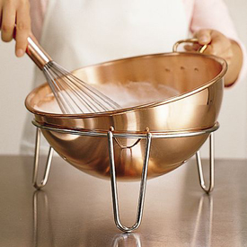
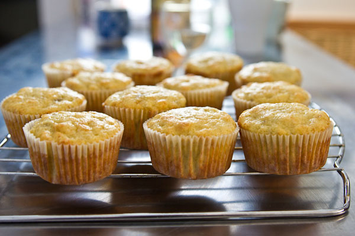

The Recipe | C`oca-Cola Cupcakes
These delicious cola flavoured cupcakes are awesome.
Not too overpowering and are a great alternative to chocolate.
This recipe makes roughly 12-16 cupcakes. Enjoy!
INGREDIENTS:
The Sponge
- 80g (3oz) unsalted butter, softened
- 280g (100 oz) caster sugar
- 240g (8 1/2 oz) plain flour
- 1 tbsp baking soda
- 1/4 tsp salt
- 1 tbsp cola syrup (soda stream is best)
- 240ml (8 1/2 fl oz) milk
- 2 large eggs
The Frosting
- 500g (1lb 2oz) icing sugar
- 160g (5 1/2 oz) unsalted butter, softened
- 2 tbsp cola syrup
- 50ml (1 3/4 fl oz) whole milk
- 24-36 cola bottle sweets to decorate (optional)
INSTRUCTIONS
 - Pre-heat the oven to 190oC (375oF), Gas mark 5, and fill a muffin tin with muffin cases.
- Using a hand-held electric whisk or a freestanding electric mixer with the paddle attachment, beat together the butter, sugar, flour, baking powder and salt on a low speed until all the ingredients are well incorporated and have the texture of fine breadcrumbs.
- Put the cola syrup and milk in a jug, break in the eggs and whisk by hand to combine. pour three-quarters of the milk mixture into the dry ingredients and mix together on a low speed. Adjust the speed to medium and continue to mix until smooth and thick. Scrape down the sides of the bowl, add the remaining milk mixture and keep beating until everything is mixed in and the batter is smooth.
- Divide the batter between the paper cases, filling them by about two-thirds. Any remaining batter can be used to fill up to four more cases in the second tin. Place in the oven and bake for 18-20 minutes or untill risen and springy to touch. Leave to cool slightly before removing from the tin and placing on a wire rack to cool completely before frosting.
- Using the electric whisk or freestanding mixer with the paddle attachment, beat the icing sugar with the butter on a low speed until no large lumps of butter are left and the mixture is still powdery. Stir together the cola syrup with the milk in a jug, then por rhis into the butter and icing sugar mixture while beating slowly. Once added, increase the speed to high and whisk until soft and fluffy.
- Spread a generous spoonful of frosting on to each cooled cupcake, then gently smooth over a palette knife, making a swirl at the top and adding a couple of cola bottle sweets, if you wish.
Share on Social Media